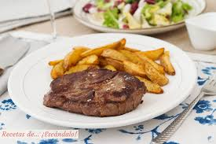

Entrecot con patatas
Receta de entrecot y patatas fritas.

Ingredientes
- 2 ó 3 patatas (200g.)
- entrecotde 300g
- Aceite de oliva
- Sal
Elaboración (Pasos)
- Calentar una sarten con un chorro de aceite
- Contimentar el entrecot con sal y pimienta
- Una vez caliente echar el entrecot a la sarten y espera 4 minutos
- Una vez pasados los 4 minutos girar el bistec y esperar otros 4 minutos
- Una vez echo sacr el entrecot en el plato
- Calentar aceite en una sartén.
- Añadir las patatas cortadas y la sal .
- Freír al gusto.
- Servir en plato.